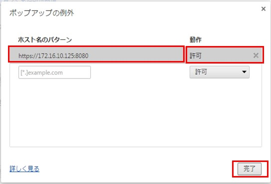

◇例として、Chromの設定を記述してあります。他のブラウザーをご使用の場合は、同様な設定をしてください。
【Chromの場合】
◇Chromを起動し、「 」をクリックして表示された一覧から「設定」をクリックします。

◇「設定」が表示されます。
スクロールし、最終行の「詳細設定を表示」をクリックします。

◇プライバシーの「コンテンツの設定」をクリックします。
◇コンテンツの設定が表示されます。
ポップアップの「例外の管理」をクリックします。

◇ポップアップの例外が表示されます。
ホスト名のパターンに https://172.16.0.125:8080 と入力し、動作を”許可”にし、「完了」をクリックします。

【Chromの場合】
◇Chromを起動し、「 」をクリックして表示された一覧から「印刷」をクリックします。
「印刷」が表示されます。
スクロールし、最終行の「詳細設定」をクリックします。

余白を「なし」にします。

前のページに戻る